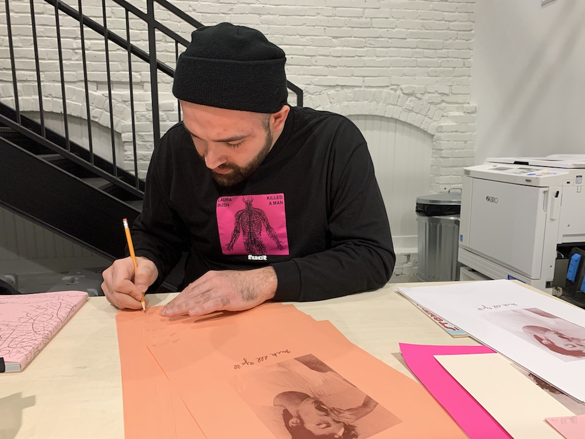
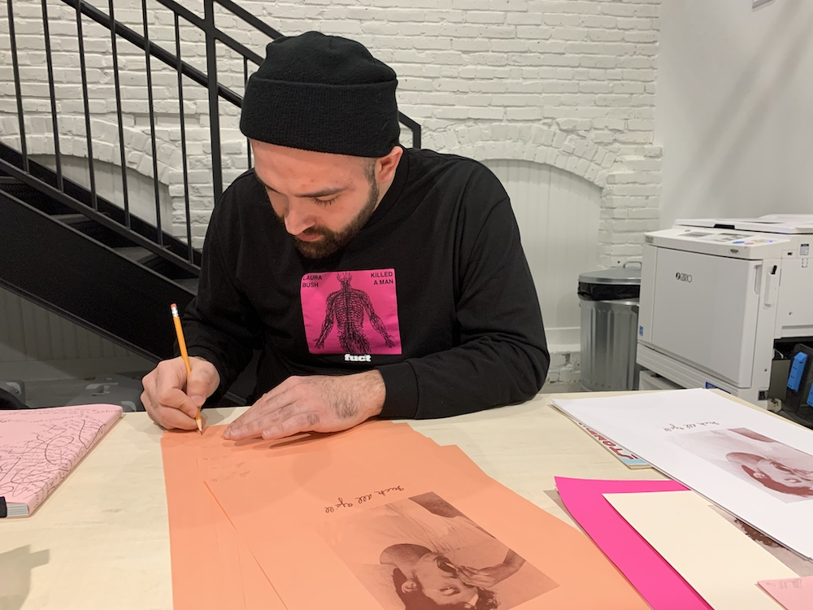

Queer.Archive.Work/residency
✨✳QAW GRANTS AND RISO RESIDENCIES✳✨
🌈Open Call for May–December 2020🌈
Risograph Residencies provide access to the QAW’s Providence, RI studio space and its resources for the realization of a particular project. Queer practices, radical publishing, and experimentation are prioritized, as well as folks who are traditionally underserved (LGBTQIA+, POC, indigenous, differently abled, immigrant, non-RISD/Brown University-affiliated).
Each residency may be up to two weeks long, with 24 hour access to the studio, the risograph printer, the library, and all equipment and supplies (inks, papers, paper trimmer, etc.), including an unrestricted stipend of $500 awarded directly to the artist, to be used for any purpose that enables them to access the residency (travel, food, rent, project supplies, etc.). Unfortunately, no accomodations are provided.
To apply for a QAW Risograph Residency, send us an email describing your practice, why you would like to access this particular space and its resources, what this opportunity would enable, and what kind of timing would work for you (May through December 2020).


🌈Open Call for May–December 2020🌈
